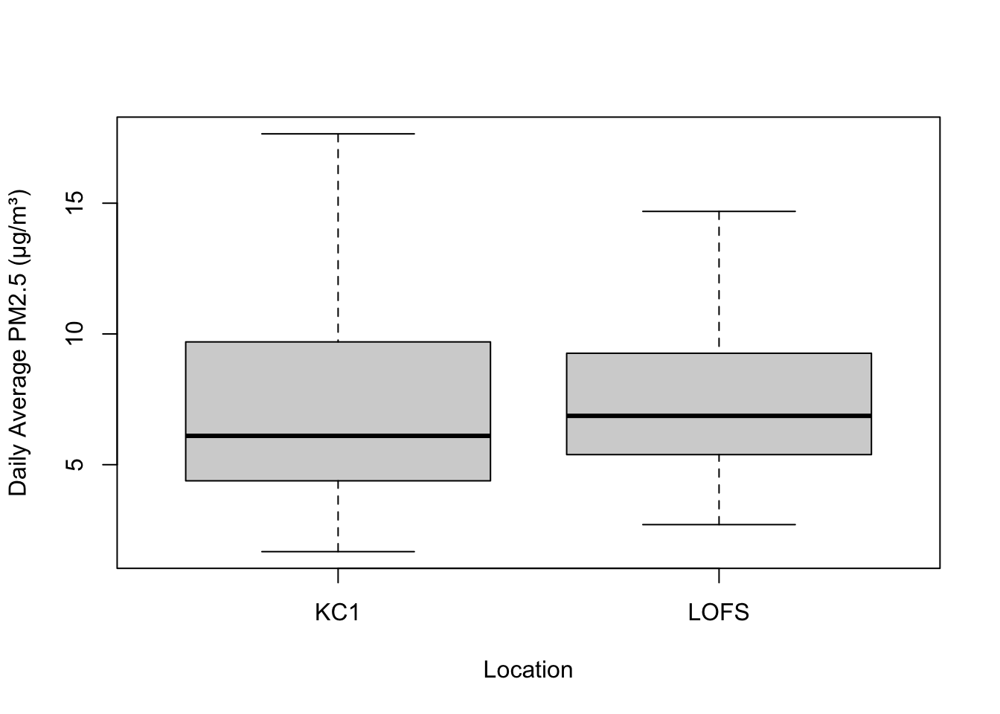

library("openair")
air_data_ttest <- importAURN(site = c("KC1", "LOFS"), year = 2025, data_type = "daily", pollutant = "pm2.5")Importing AQ Data ■■■■■■■■■■■■■■■■ 50% | ETA: 2sLast week, we used open source air pollution secondary data to perform a descriptive time-series analysis, correlation and a linear regression model.
In this practical, you will step into the role of an urban air-quality investigator. Over the past week, most of you have taken handheld air-pollution monitors into the streets of London to collect real-time data on the air they breathe. These monitors capture small-scale variations in pollutants—variations that can shift dramatically over just a few metres. In dense urban environments, these subtle changes matter: they shape not only the spatial patterns we observe in datasets, but also the personal exposure risks faced by people moving through the city each day.
With that said, you will work with the dataset collected during these field surveys. Your task is to explore how air quality changes around your assigned field location and to test a hypothesis of your choosing. The nature of your hypothesis should reflect the features of your street or the environmental processes you think might be at play. For example, you might investigate whether:
These are just starting points but you are free to formulate any hypothesis grounded in plausible urban processes. As you proceed, remember that your analysis in the computer practical will require comparing two groups (e.g., near vs. far from the road, high traffic vs. low traffic zones, or street number 1 versus street number 2 etc.). Keep this in mind when designing your hypothesis and exploring the dataset. Also note that meaningful statistical testing (i.e., unpaired t-test) often requires more data than expected, so be prepared for sample size considerations as you evaluate significance.
By the end of this activity, you should have a deeper appreciation for how dynamic and localised air pollution can be—and how thoughtful data collection and analysis can help us make sense of complex urban environments.
Let’s begin!
A t-test is a statistical method used to determine whether the mean (average) of a numerical variable differs significantly between two groups. It tests whether any observed difference in means is likely due to real differences between the groups or simply random variation.
In the context of the air pollution problem - an example would be comparing two monitoring AURN stations. For instance, suppose you have PM2.5 data from:
We want to compare if there’s any differences in the levels of PM2.5 between these two different locations, an unpaired two-sample t-test can be used to answer this question for this scenario!
Let show you how by using open source data as a motivating example:
library("openair")
air_data_ttest <- importAURN(site = c("KC1", "LOFS"), year = 2025, data_type = "daily", pollutant = "pm2.5")Importing AQ Data ■■■■■■■■■■■■■■■■ 50% | ETA: 2sFirst thing, since we are comparing groups i.e., KC1 and LOFS. Explore the mean PM2.5 by stations using tapply() function:
tapply(air_data_ttest$pm2.5, air_data_ttest$code, mean, na.rm = TRUE) KC1 LOFS
8.636080 7.822469 tapply(air_data_ttest$pm2.5, air_data_ttest$code, sd, na.rm = TRUE) KC1 LOFS
7.159948 3.539562 boxplot(air_data_ttest$pm2.5 ~ air_data_ttest$code, ylab = "Daily Average PM2.5 (μg/m³)", xlab = "Location", outline = FALSE)
We can see, at face-value, the average PM2.5 at KC1 (i.e., Kensington) is 8.786, which is a slightly higher than LOFS (i.e., Farringdon) which has an average of 7.605. Visually, however, it is difficult based on medians, but KC1 has a wide distribution with more extreme values.
Now, we want to know if this difference are indeed statistical significant. We can do this by using the t.test() and declaring paired = FALSE.
t.test(air_data_ttest$pm2.5[air_data_ttest$code == "KC1"], air_data_ttest$pm2.5[air_data_ttest$code == "LOFS"], paired = FALSE)
Welch Two Sample t-test
data: air_data_ttest$pm2.5[air_data_ttest$code == "KC1"] and air_data_ttest$pm2.5[air_data_ttest$code == "LOFS"]
t = 1.8549, df = 564.04, p-value = 0.06413
alternative hypothesis: true difference in means is not equal to 0
95 percent confidence interval:
-0.04793465 1.67515572
sample estimates:
mean of x mean of y
8.636080 7.822469 Interpretation: This unpaired t-test examines whether the average PM2.5 concentration differs between two air-quality monitoring stations: KC1 and LOFS. It shows the following:
Difference in means i.e., PM2.5 at KC1: 8.79 µg/m³, and LOFS is 7.61 µg/m³. So KC1 has a higher average PM2.5 than LOFS by about 1.18 µg/m³.
Statistical significance with p = 0.01347 which less than less than 0.05. Therefore, the difference in mean PM2.5 between the two stations is statistically significant. This means that at KC1, it genuinely tends to experience higher PM2.5 levels than LOFS.
Suppose that repeat pollution measurements were taken at the same location but at different time points - your dataset is structure as before and after scenario. Here you must used a paired t-test NOT the unpaired one! In the t.test() make sure to set the option paired = TRUE to perform a paired t-test!
Okay folks, that is how you execute a t-test. Now, you should be able to do the final worksheet, and adapt the codes to your own dataset.
Using the field collected data - you must explore the differences between two groups. The question is:
Are there any significant difference in the mean air quality indicator measured between the two streets you were designated with?
tapply() function for the purpose.Submission Deadline: Thursday 4th December, 2025
The above date is a hard deadline! You need to submit the work via Moodle, through the GEOG0186: LONDON page.
Please download the answer sheet HERE. You can use the answer sheet for this worksheet to insert your answers into the appropriate sections. Please note that this Worksheet 5, in particular will only be marked with individualised feedback to the script.